Contents
Compare simple drag with surface accommodation over a 3D model
Surface accommodation includes a component of the force in the "lift" direction, not just the force along the velocity vector. Computing it requires an estimate of the accommodation coefficients, which will vary with the surface properties. By default, FAeroSurfaceAccommodation uses coefficients fit to experimental data for N2 on an aluminum surface, which is valid for altitudes under 300 km.
------------------------------------------------------------------------
References: Fredo and Kaplan, "Procedure for Obtaining Aerodynamic
Properties of Spacecraft," J. Spacecraft Vol. 18 No. 4,
July-August 1981.
------------------------------------------------------------------------ See also: DrawCAD, CrossSection, VOrbit, AtmDens2, AeroF, FAeroSurfaceAccommodation, RVFromKepler, DrawSCPlanPlugIn ------------------------------------------------------------------------
%-------------------------------------------------------------------------- % Copyright (c) 2022 Princeton Satellite Systems, Inc. % All rights reserved. %-------------------------------------------------------------------------- % Since version 2022.1 %--------------------------------------------------------------------------
The spacecraft
disp('Satellite cross-sectional area:') g = load('SCForImaging'); DrawCAD( g, true ); areaX = CrossSection( g, [], [1;0;0] ) areaY = CrossSection( g, [], [0;1;0] ) areaZ = CrossSection( g, [], [0;0;1] )
Satellite cross-sectional area:
areaX =
2.96
areaY =
3.151
areaZ =
15.627
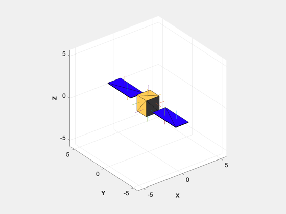 Data sorting
data = struct; data.area = []; data.normal = []; data.temperature = []; for j = 1:length(g.component) nA = length(g.component(j).a); data.area = [data.area g.component(j).a']; data.normal = [data.normal g.component(j).n']; if isfield(g.component,'thermal') temp = g.component(j).thermal.temperature; else temp = 300; end data.temperature = [data.temperature temp*ones(1,nA)]; end % data is now a structure of arrays for each face area with area, normal % and temperature data
data =
struct with fields:
area: [3.2468 3.2468 3.2468 3.2468 3.2468 3.2468 … ] (1×20 double)
normal: [3×20 double]
temperature: [300 300 300 300 300 300 300 300 300 300 300 … ] (1×20 double)
Surface Accommodation
Flat-on, the coefficient of drag is the same. At an angle, it changes. References include Kaplan and Fredo's journal paper and Storch's report.
h = 6600; % km R_EARTH = 6378; % km v = VOrbit(h)*1000; % m/s disp('Surface Accommodation forces and coefficient of drag:') rho = AtmDens2(h-R_EARTH); tA = 2149.00; % atmospheric temperature (K) mG = 17.06700873108905*1e-3; % mass (kg/mol) % First, straight on the flat faces in each direction disp('---- x-velocity') ux = [v;0;0]; % rotation of earth? [fx,cDx] = FAeroSurfaceAccommodation( ux, rho, tA, mG, data ) disp('---- y-velocity') uy = [0;v;0]; % rotation of earth? [fy,cDy] = FAeroSurfaceAccommodation( uy, rho, tA, mG, data ) disp('---- z-velocity') uz = [0;0;v]; % rotation of earth? [fz,cDz] = FAeroSurfaceAccommodation( uz, rho, tA, mG, data ) disp('simple drag model using cDz, matches') [~,fT] = AeroF( rho, cDz, uz*1e-3, data.normal, data.area ); fT % Then, from an angle. % The surface accommodation force is different in each component while the % simple constant cD is the same. disp('---- offset velocity ----') u = v*Unit([1;1;1]); [f,cDacc] = FAeroSurfaceAccommodation( u, rho, tA, mG, data ) disp(Mag(f)) [fA,fT] = AeroF( rho, cDz, u*1e-3, data.normal, data.area ); fT disp('Observe the difference in the force direction:') disp('Accommodation, Simple Drag:') disp(Unit([f fT]))
Surface Accommodation forces and coefficient of drag:
---- x-velocity
fx =
-0.042595
0
0
cDx =
3.0914
---- y-velocity
fy =
0
-0.04452
0
cDy =
3.0353
---- z-velocity
fz =
0
0
-0.17029
cDz =
2.3411
simple drag model using cDz, matches
fT =
0
0
-0.17029
---- offset velocity ----
f =
-0.044716
-0.04529
-0.0828
cDacc =
1.7078
0.10443
fT =
-0.078963
-0.078963
-0.078963
Observe the difference in the force direction:
Accommodation, Simple Drag:
-0.42818 -0.57735
-0.43367 -0.57735
-0.79284 -0.57735
Via Disturbances
jD = Date2JD([2022 1 1]); d = Disturbances( 'defaults' ); solarFlux = 1358; d.s = solarFlux*SunV1(jD(1)); % Watts/m^2 d.tSamp = 10; d.shadow = 0; d.showScans = 1; d.nScanLines = 10; d.units = 'm'; d.planet = 'earth'; d.mu = 3.986014e5; d.r = [h;0;0]; d.b = [0;0;71]*1.e-9; d.v = v*Unit([1;1;1])*1e-3; % km/s d.tGas = tA; % K; 900? d.mGas = mG; d.computePR = 0; d.computeAero = 1; d.atmosphericDensity = rho; % Initialize the disturbance model hD = Disturbances( 'init', g, d ); [f, t] = Disturbances( 'run', g, d, hD ); disp('Force from Disturbances, default cD') disp(f.aero) disp('Magnitude') disp(Mag(f.aero)) % Zero the coefficient of drag to force the accommodation calc (Hughes) g0 = g; for k = 1:length(g0.component) g0.component(k).aero.cD = 0; % or empty? g0.component(k).aero.sigmaN = 0.7; g0.component(k).aero.sigmaT = 0.7; end [f0, t0] = Disturbances( 'run', g0, d, hD ); disp('Force from Disturbances, surface accommodation') disp(f0.aero) disp('Magnitude') disp(Mag(f0.aero)) disp('Directions compared to velocity vector, [v cD accom]') disp(Unit([d.v f.aero f0.aero]))
Force from Disturbances, default cD
-0.09107
-0.09107
-0.09107
Magnitude
0.15774
Force from Disturbances, surface accommodation
-0.05404
-0.05448
-0.083222
Magnitude
0.1132
Directions compared to velocity vector, [v cD accom]
0.57735 -0.57735 -0.47739
0.57735 -0.57735 -0.48127
0.57735 -0.57735 -0.73517
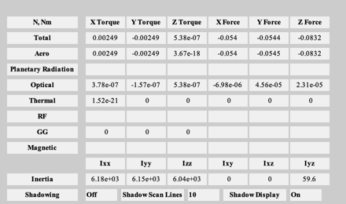 Along an orbit
If inclination and eccentricity are zero, the velocity vector simply moves in the X/Y plane of the spacecraft body frame.
el = [6378+250 0 0 0 0.002 0]; [r,v,t] = RVFromKepler(el); e = EarthEnvironment(r,v,jD,d); g = SetCADQuaternion( g, Eul2Q([pi/2;0;0]) ); g0 = SetCADQuaternion( g0, Eul2Q([pi/2;0;0]) ); hD = Disturbances( 'init', g, e ); [f, tq] = Disturbances( 'run', g, e, hD ); [f0, tq0] = Disturbances( 'run', g0, e, hD );
Plot
[tP,tL] = TimeLabel(t);
Plot2D(tP,f.aero,tL,{'F_x','F_y','F_z'},'Aero Force, ECI Frame (N)')
subplot(3,1,1)
hold on
plot(tP,f0.aero(1,:))
legend('Constant cD','Surface Acc.')
subplot(3,1,2)
hold on
plot(tP,f0.aero(2,:))
subplot(3,1,3)
hold on
plot(tP,f0.aero(3,:))
qLVLH = QLVLH(r,v);
f_lv = QForm(qLVLH,f.aero);
f_lv0 = QForm(qLVLH,f0.aero);
[~,ls] = Plot2D(tP,f_lv0,tL,'LVLH Aero Force (N)');
hold on
for k = 1:3
lh(k) = plot(tP,f_lv(k,:),'--','color',ls.h(k).Color,'linewidth',1);
end
legend([ls.h(1) lh(1)],'Accomm.','cD')
Plot2D(tP,e.atmosphericDensity,tL,'Atmospheric Density (kg/m^3)')
% Visualize the vectors
g.rECI = r(:,1);
g.vECI = v(:,1);
tag = DrawSCPlanPlugIn( g );
DrawSCPlanPlugIn( 'vectors', tag, g, e.s(:,1) )
for k = 2:length(t)
g.rECI = r(:,k);
g.vECI = v(:,k);
DrawSCPlanPlugIn( 'vectors', tag, g, e.s(:,1) )
drawnow
end
%--------------------------------------
% $Id: 25920d0c1cb3732b1900d0ddc5efbb111706c35b $
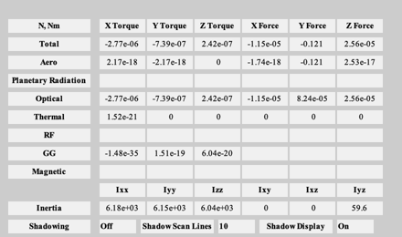 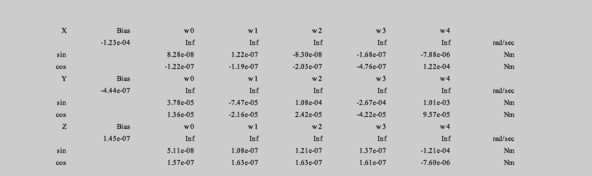 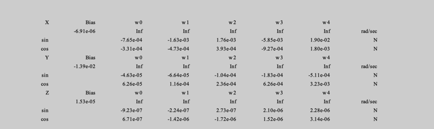 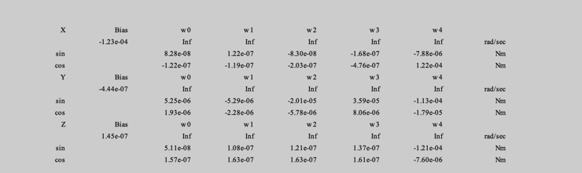 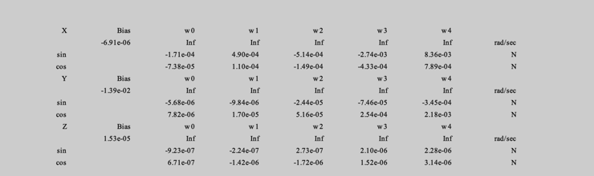 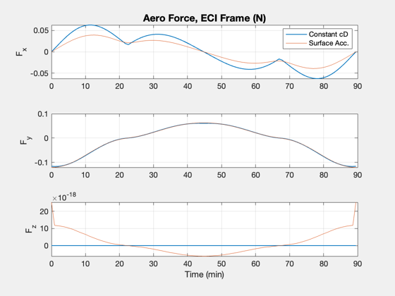 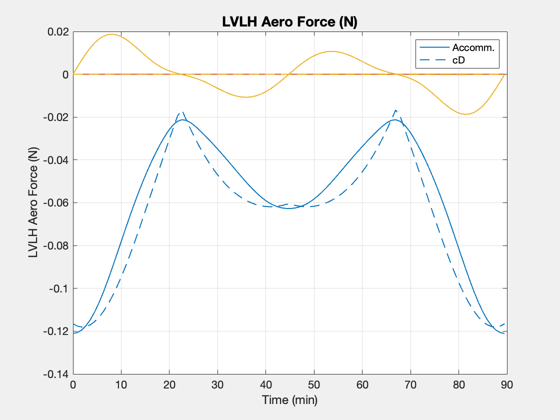 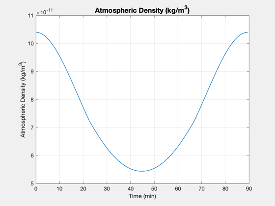 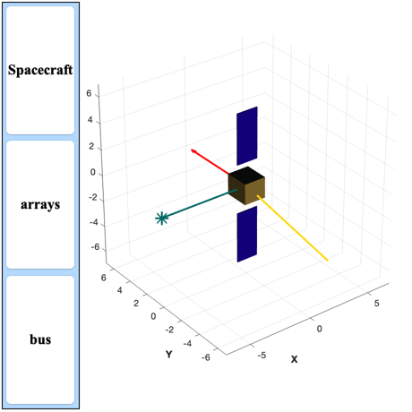